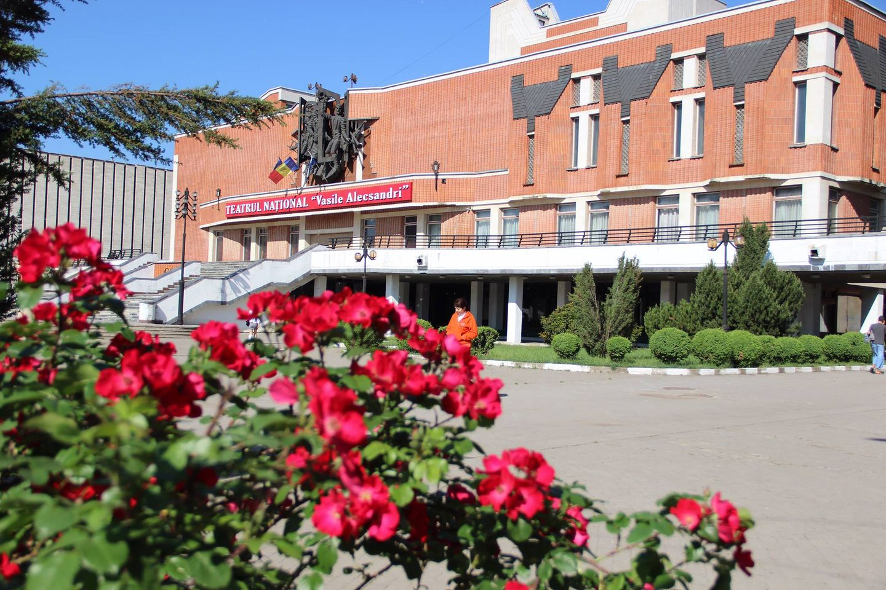
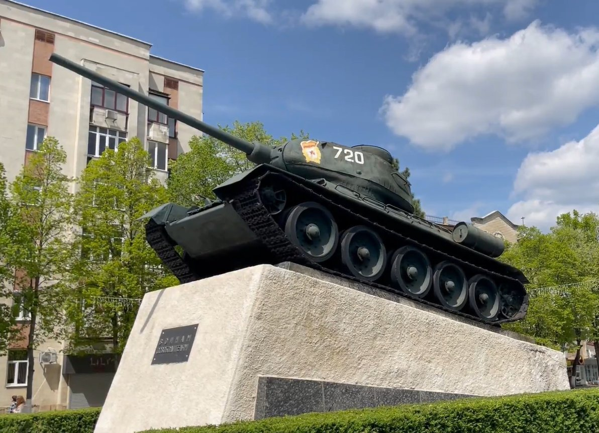
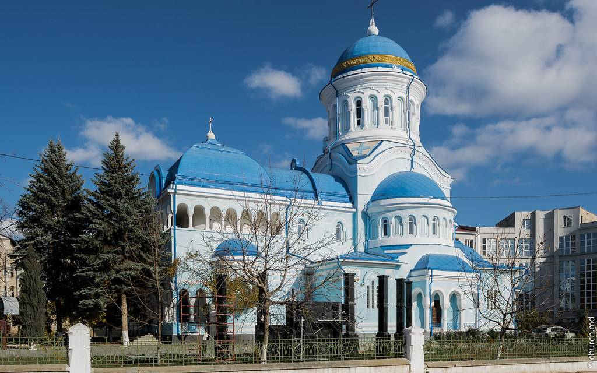
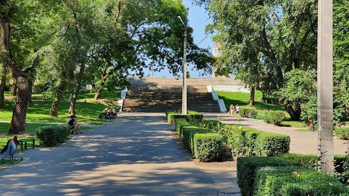

Explorează Bălți
Teatrul Național Vasile Alecsandri

Teatrul este unul dintre cele mai vechi și importante instituții culturale din nordul Republicii Moldova. A fost fondat în anul 1957 și, de-a lungul timpului, a devenit un simbol al vieții artistice din Bălți. Clădirea teatrului impresionează prin arhitectura sa clasică și atmosfera elegantă, fiind amplasată într-o zonă centrală a orașului. Sala de spectacole este spațioasă și bine adaptată pentru diferite tipuri de reprezentații. Repertoriul teatrului este variat: de la piese clasice scrise de autori precum William Shakespeare sau Ion Luca Caragiale, până la spectacole moderne și creații contemporane. De asemenea, teatrul organizează festivaluri, premiere și evenimente culturale care atrag spectatori din întreaga regiune.
Monumentul Tancului T-34

Acest monument este unul dintre cele mai recunoscute simboluri istorice ale orașului. Tancul de tip T-34, folosit în Al Doilea Război Mondial, este amplasat pe un piedestal și reprezintă victoria Armatei Sovietice asupra Germaniei naziste. Monumentul nu este doar un obiect decorativ, ci un loc de comemorare. În anumite zile, cum ar fi Ziua Victoriei, oamenii vin aici pentru a depune flori și a onora memoria soldaților căzuți. De-a lungul timpului, monumentul a fost și subiect de discuții, deoarece simbolizează o perioadă istorică interpretată diferit de diverse grupuri.
Catedrala Sfinții Constantin și Elena

Catedrala este una dintre cele mai importante lăcașuri de cult ortodoxe din oraș. Este dedicată împăraților Constantin cel Mare și Elena, figuri esențiale în istoria creștinismului. Interiorul catedralei este decorat cu icoane, fresce și elemente specifice stilului ortodox, creând o atmosferă de liniște și spiritualitate. Aici au loc slujbe religioase importante, mai ales în timpul marilor sărbători precum Paștele sau Crăciunul. Pe lângă rolul religios, catedrala este și un punct de atracție turistică datorită arhitecturii sale și importanței culturale.
Parcul Central Mihai Volontir

Parcul central este unul dintre cele mai frecventate locuri de relaxare din oraș. Este amenajat cu alei largi, bănci, spații verzi și zone pentru copii, fiind ideal pentru plimbări, sport sau întâlniri cu prietenii. Parcul poartă numele actorului Mihai Volontir, originar din această regiune și foarte apreciat pentru rolurile sale din teatru și film. Pe timpul verii, în parc au loc concerte, târguri și alte evenimente culturale. De asemenea, este un loc popular pentru fotografii și odihnă în aer liber, mai ales în weekenduri.
Universitatea de Stat „Alecu Russo” din Bălți

Această universitate este un centru educațional important pentru nordul Republicii Moldova. A fost fondată în 1945 și oferă programe de studii în domenii precum pedagogie, științe exacte, limbi străine și informatică. Instituția poartă numele scriitorului Alecu Russo și are un rol major în formarea cadrelor didactice și a specialiștilor din diferite domenii. Universitatea dispune de biblioteci, laboratoare și centre de cercetare, iar viața studențească este activă, incluzând conferințe, concursuri și evenimente culturale. Studenți din diferite regiuni ale țării vin aici pentru studii, contribuind la diversitatea mediului academic.